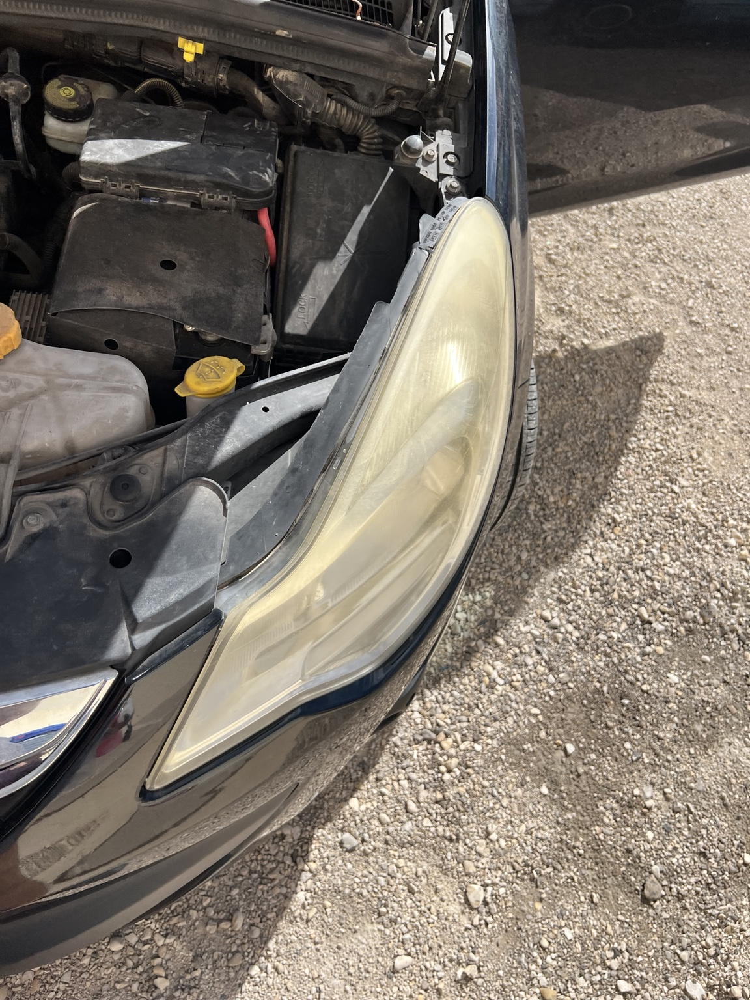
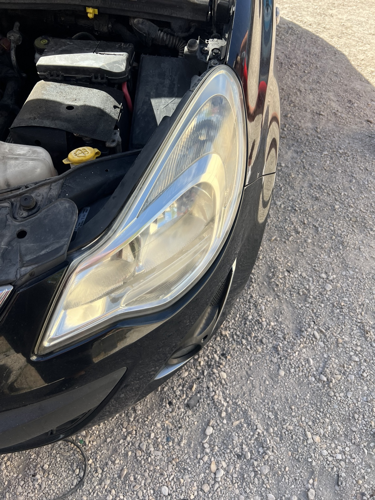
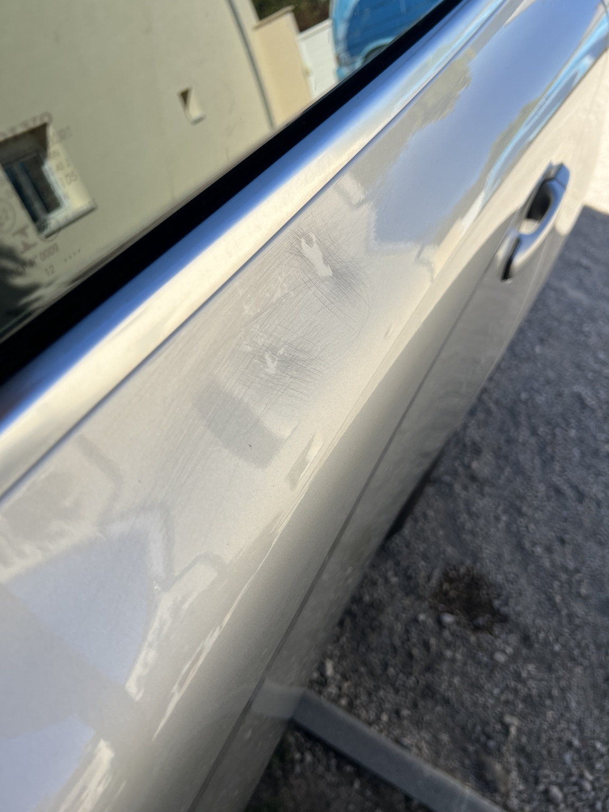
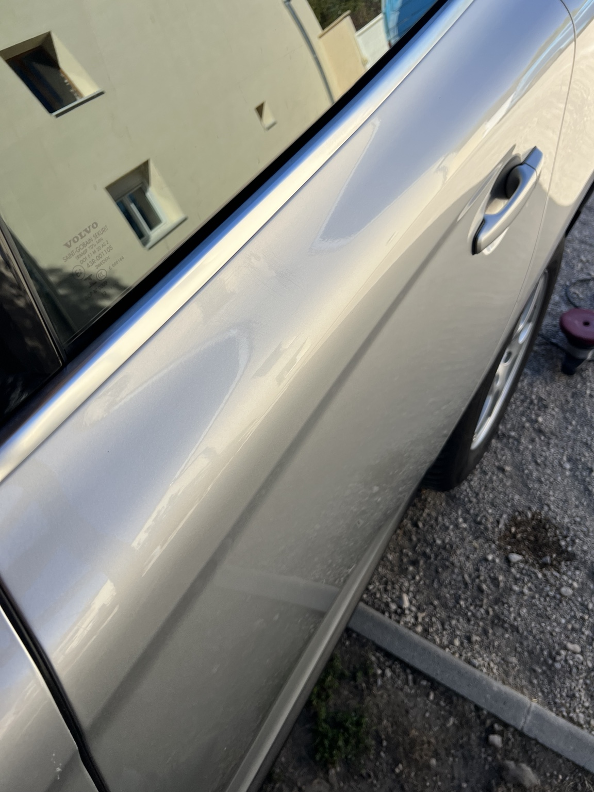
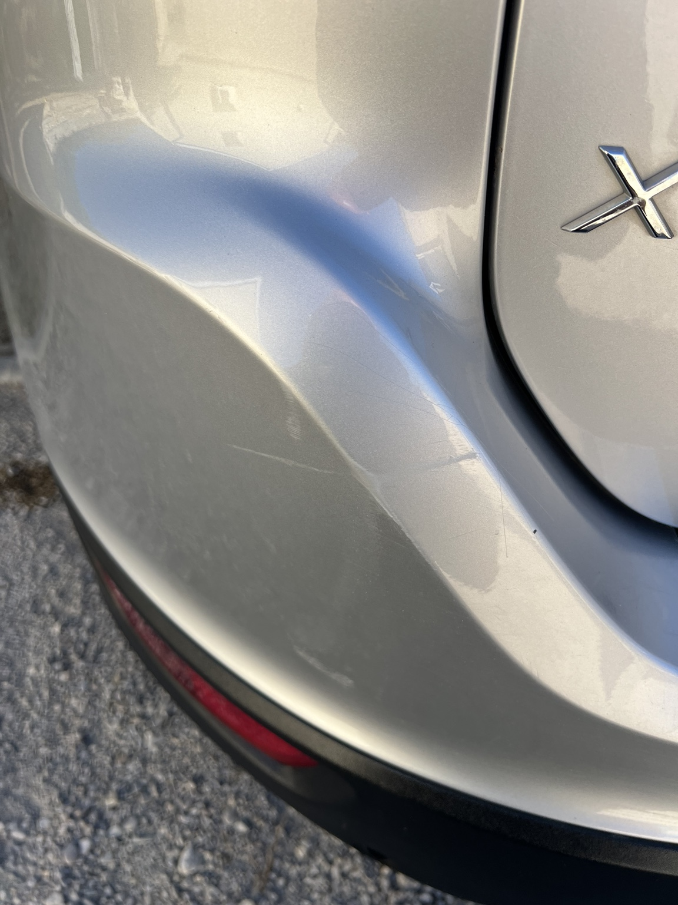
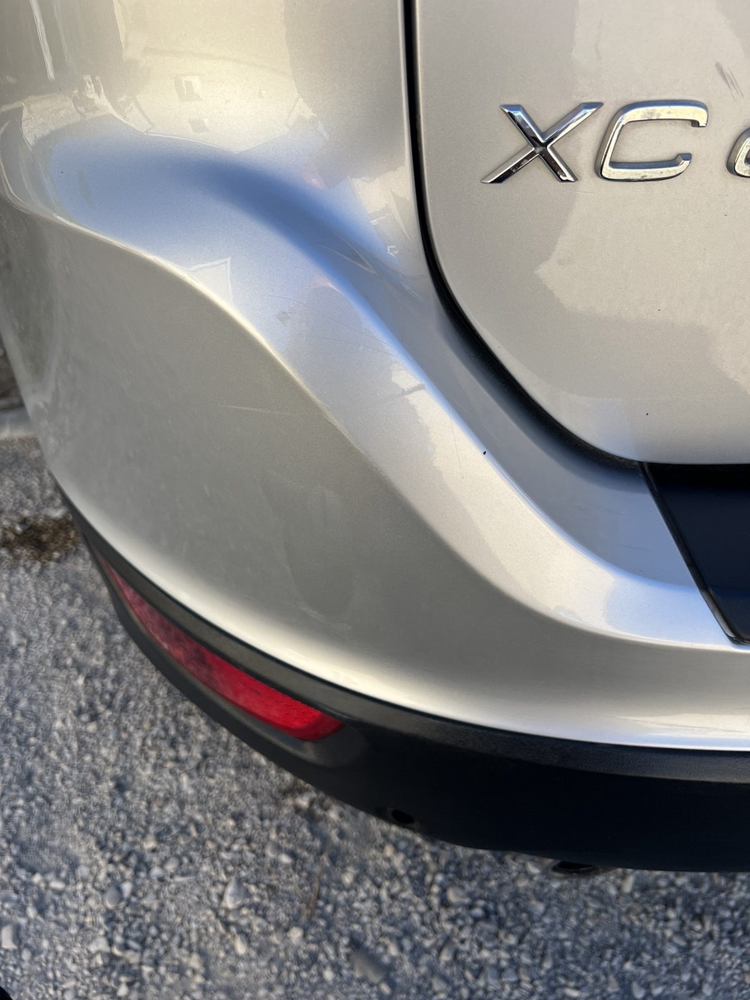
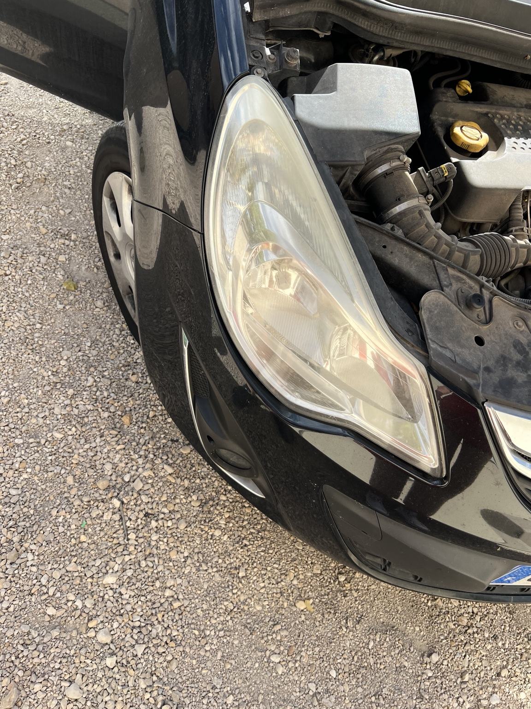
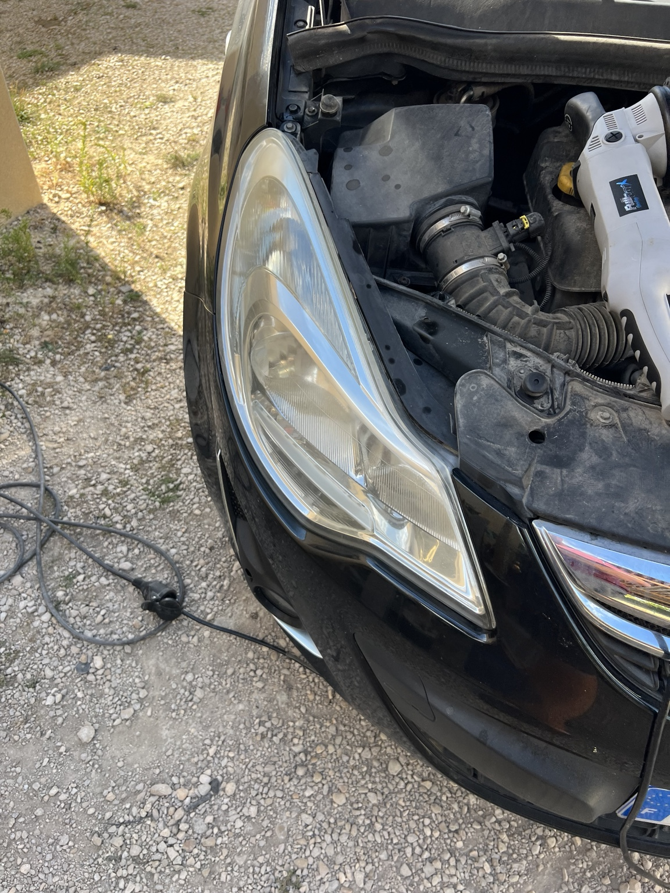

Nettoyage • Detailing • Rénovation — Auto • Moto • Utilitaire
Demander un devisVoir les réalisationsDes prestations adaptées à l’état du véhicule et au résultat recherché, du nettoyage courant à la rénovation esthétique.
Aspiration, plastiques, tissus, sièges, moquettes et finitions pour retrouver un habitacle propre et soigné.
Lavage soigné, décontamination et finitions pour mettre en valeur la carrosserie et ses détails.
Correction de défauts, polissage et rénovation d’optiques selon l’état et les besoins du véhicule.
Nettoyage esthétique et finitions avec une attention particulière aux zones difficiles d’accès.
Remise au propre des véhicules professionnels, ponctuellement ou dans le cadre d’un entretien régulier.
Chaque véhicule est différent : la prestation peut être adaptée après échange et photos.
De vrais véhicules, de vrais résultats. Voici deux exemples de rénovation esthétique réalisés par JCX.








Auto, moto ou utilitaire — décrivez votre véhicule et la prestation souhaitée.
Appeler JCXZone d’intervention : secteur Athis • Épernay • Châlons-en-Champagne